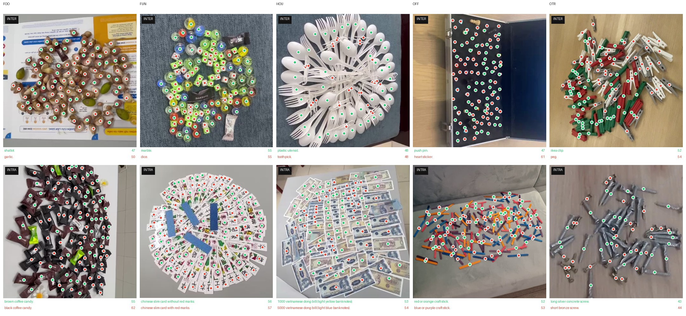
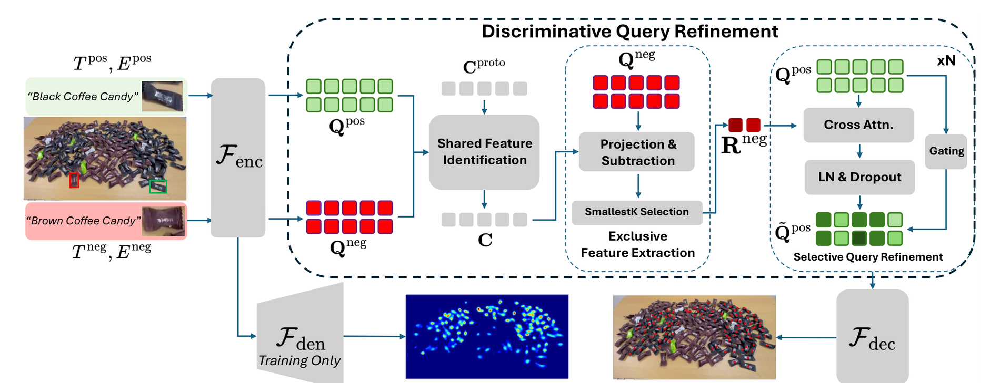

1Department of Computer Science, Stony Brook University
2Australian Institute for Machine Learning, Adelaide University
European Conference on Computer Vision (ECCV) 2026
Scenes from CoCount. Every one contains two confusable classes, counted independently.
Class-agnostic counters do well on benchmarks where the only salient repeated object is the target. Real requests are narrower: count the black beans, not every bean; the black coffee candies, not every sweet in the pile. CoCount is built to make that distinction unavoidable: every image contains two confusable classes, each annotated with its own independent set of dots.

Because both classes are annotated, one frame yields two counting queries:
count A while excluding B, then count B while excluding A. The released splits store one
record per query, which is why CoCount-train has 14,834 rows over 7,417 distinct
frames. Across all three splits: 7,417 train, 1,335 val and
1,334 test frames, for 10,086 in total.
Because both classes in a scene are annotated, the same image yields two counting problems with the same pixels and different answers. A model that ignores the exemplars and counts "everything small and repeated" is penalised on both. The pairing also gives every positive a matched hard negative for free, with no mining and no synthetic composition.
| Supercategory | Code | Frames | Pairs | INTER | INTRA | Points | Count range |
|---|---|---|---|---|---|---|---|
| Food | FOO | 1,820 | 19 | 920 | 900 | 434,240 | 4-472 |
| Game | FUN | 1,270 | 20 | 578 | 692 | 123,277 | 2-145 |
| Home | HOU | 1,710 | 20 | 884 | 826 | 244,164 | 4-283 |
| Desk | OFF | 1,720 | 20 | 960 | 760 | 253,180 | 5-312 |
| Misc | OTR | 897 | 18 | 446 | 451 | 104,775 | 4-269 |
| Total | 7,417 | 97 | 3,788 | 3,629 | 1,159,636 | 2-472 |
| Objects per class | ≤10 | ≤25 | ≤50 | ≤100 | ≤200 | ≤400 |
|---|---|---|---|---|---|---|
| Cumulative share | 3.4% | 18.7% | 47.8% | 76.2% | 93.0% | 99.5% |
from datasets import load_dataset
ds = load_dataset("BBVisual/CoCount-train", split="train")
ex = ds[0]
print(ex["pos_caption"], ex["pos_count"], len(ex["pos_points"]))
print(ex["neg_caption"], ex["neg_count"], len(ex["neg_points"]))Each record carries the image, both class names, both counts, both dot sets in absolute pixel coordinates, and exemplar boxes for each class.
CountEx lets a user express both inclusion and exclusion intent (what to count and what to ignore) through natural-language descriptions and optional visual exemplars. At its core is a Discriminative Query Refinement module, which reasons jointly over the two cues: it first identifies visual features the target and the distractor share, then isolates the patterns specific to the exclusion, then applies selective suppression to refine the counting query.
Existing prompt-based counters let you say what to count but give you no way to say what to leave out, so cluttered scenes with confusable categories produce ambiguity and overcounting. Full abstract in the paper.

Two settings. KC (known-category) trains on all five supercategories and tests on seen categories. NC (novel-category) holds one supercategory out entirely, measuring zero-shot transfer to unseen objects.
| Method | NC-setting | KC-setting | ||
|---|---|---|---|---|
| MAE | RMSE | MAE | RMSE | |
| LLMDet | 33.22 | 47.66 | 16.82 | 29.23 |
| CAD-GD | 34.08 | 50.39 | 16.00 | 27.52 |
| GroundingREC | 29.29 | 42.43 | 17.54 | 27.41 |
| CountGD | 33.78 | 48.29 | 15.55 | 28.32 |
| CountEx | 26.61 | 38.86 | 12.72 | 23.99 |
The same model transfers to counting benchmarks it was not trained on, including PairTally.
| Model | MAE | NAE | ||
|---|---|---|---|---|
| Inter | Intra | Inter | Intra | |
| Pre-trained specialist counting models | ||||
| DAVE | 46.27 | 46.75 | 0.779 | 0.797 |
| GeCo | 45.05 | 54.80 | 0.777 | 0.935 |
| LoCA | 71.89 | 57.45 | 1.177 | 0.950 |
| FamNet | 66.97 | 74.75 | 1.363 | 1.440 |
| CountGD | 39.78 | 56.54 | 0.673 | 0.906 |
| CountGD (text) | 50.23 | 53.93 | 0.712 | 0.841 |
| LLMDet | 78.72 | 142.08 | 0.661 | 1.060 |
| Pre-trained large vision-language models | ||||
| Ovis2 | 56.87 | 74.24 | 0.711 | 0.736 |
| Qwen2.5-VL | 46.35 | 67.86 | 0.598 | 0.712 |
| LLaMA-3.2 | 49.14 | 58.73 | 0.730 | 0.740 |
| InternVL3 | 55.89 | 71.47 | 0.667 | 0.721 |
| Models trained on CoCount | ||||
| LLMDet | 18.78 | 21.06 | 0.225 | 0.368 |
| CAD-GD | 19.47 | 16.98 | 0.243 | 0.259 |
| GroundingREC | 19.71 | 17.91 | 0.260 | 0.349 |
| CountGD | 19.67 | 15.67 | 0.263 | 0.318 |
| CountEx | 15.61 | 12.57 | 0.197 | 0.229 |
| Method | MAE | RMSE |
|---|---|---|
| Per-category synthetic data generation and adaptation | ||
| D’Alessandro et al. | 10.00 | 16.95 |
| Zero-shot, no training or adaptation | ||
| OWLv2 | 37.25 | 55.01 |
| GroundingDINO | 33.89 | 59.51 |
| PseCo | 59.82 | 72.79 |
| DAVE | 56.10 | 73.34 |
| CountGD | 22.34 | 33.90 |
| LLMDet* | 22.86 | 33.29 |
| CAD-GD* | 28.14 | 41.30 |
| GroundingREC* | 27.24 | 41.57 |
| CountGD* | 23.55 | 36.89 |
| CountEx* | 18.53 | 30.46 |
| Prompt | NC-setting | KC-setting | |||||
|---|---|---|---|---|---|---|---|
| Tpos | Epos | Tneg | Eneg | MAE | RMSE | MAE | RMSE |
| ✓ | 32.22 | 48.38 | 15.96 | 28.76 | |||
| ✓ | ✓ | 31.57 | 46.73 | 15.75 | 27.59 | ||
| ✓ | ✓ | 26.67 | 39.00 | 13.22 | 26.23 | ||
| ✓ | ✓ | ✓ | ✓ | 26.61 | 38.86 | 12.72 | 23.99 |
The exclusion prompt is what moves the needle: adding Tneg to a positive-only prompt cuts NC MAE from 32.22 to 26.67, a far larger gain than adding positive exemplars alone (31.57). The paper also reports that a mismatched negative (asking to exclude "red" in a scene of black and brown candies) still helps, reaching 28.43 - worse than a relevant negative, but better than none at all.
| Lden | Lproto | NC-setting | KC-setting | ||
|---|---|---|---|---|---|
| MAE | RMSE | MAE | RMSE | ||
| 30.75 | 42.84 | 15.20 | 28.33 | ||
| ✓ | 29.21 | 41.61 | 13.00 | 25.22 | |
| ✓ | ✓ | 26.61 | 38.86 | 12.72 | 23.99 |
We found an annotation issue in the test-set evaluation labels and corrected it. The issue is confined to evaluation labels and does not touch the training annotations CountEx learns from, since training uses dot annotations. The released dataset now ships the corrected labels; the paper was submitted beforehand and reports the originals. Both are below; differences are small and the conclusions are unchanged.
| Split | Corrected imgs | MAE (paper) | MAE (corrected) | Δ | RMSE (paper) | RMSE (corrected) | Δ |
|---|---|---|---|---|---|---|---|
| Food | 30 | 37.04 | 37.40 | 0.36 | 50.58 | 51.30 | 0.72 |
| Home | 0 | 24.16 | 24.16 | 0.00 | 34.87 | 34.87 | 0.00 |
| Desk | 18 | 31.18 | 27.89 | 3.29 | 51.90 | 46.47 | 5.43 |
| Misc | 72 | 23.82 | 22.97 | 0.85 | 32.68 | 31.88 | 0.80 |
| Game | 30 | 16.84 | 16.84 | 0.00 | 24.26 | 24.26 | 0.00 |
| KC (overall) | 150 | 12.72 | 11.20 | 1.52 | 23.99 | 20.32 | 3.67 |
For Game, 30 frames were updated but the corrected counts land very close to the originals, so MAE and RMSE are unchanged after rounding.
This work follows directly from PairTally (DICTA 2025), by the same authors, which asked whether current models can count what we mean, not what they see. PairTally established the problem as a benchmark: 681 controlled images, each pairing two confusable categories over the same five supercategories used here, with 50 inter-category and 47 intra-category pairs. Evaluating ten models across three counting paradigms, it found that none reliably honours a fine-grained intent.
PairTally is diagnostic and evaluation-only, and at 681 images too small to train on. CountEx takes the next two steps: CoCount scales the same paired design to 10,086 annotated frames over 97 category pairs, enough to train on, and CountEx supplies a method for the exclusion intent PairTally showed was missing. CountEx is also evaluated on PairTally, where it outperforms pre-trained specialist counters, general vision-language models, and detectors trained on CoCount (paper, Table 4).
Benchmark and code: PairTally_Benchmark
git clone https://github.com/bbvisual/CountEx.git
cd CountEx
bash src/eval_env_setup.sh # conda env + deps (bf16 → Ampere or newer)
export HF_TOKEN=your_token_here
cd src
bash scripts/eval/kc.sh # known-category
bash scripts/eval/nc_food.sh # novel-category, Food held out
Checkpoints download from the Hub automatically: BBVisual/CountEX-KC for the KC
setting and BBVisual/CountEX-NC-{Food,Home,Desk,Misc,Game} for each novel-category
fold. Full instructions, training recipes and the split-code mapping are in the
repository README.
@inproceedings{countex2026,
title = {CountEx: Fine-Grained Counting via Exemplars and Exclusion},
author = {Huang, Yifeng and Nguyen, Gia Khanh and Hoai, Minh},
booktitle = {European Conference on Computer Vision (ECCV)},
year = {2026}
}If you use CoCount or build on the fine-grained counting setting, please also cite PairTally, which introduced it:
@inproceedings{nguyen2025pairtally,
title = {Can Current AI Models Count What We Mean, Not What They See?
A Benchmark and Systematic Evaluation},
author = {Nguyen, Gia Khanh and Huang, Yifeng and Hoai, Minh},
booktitle = {Digital Image Computing: Techniques and Applications (DICTA)},
year = {2025}
}